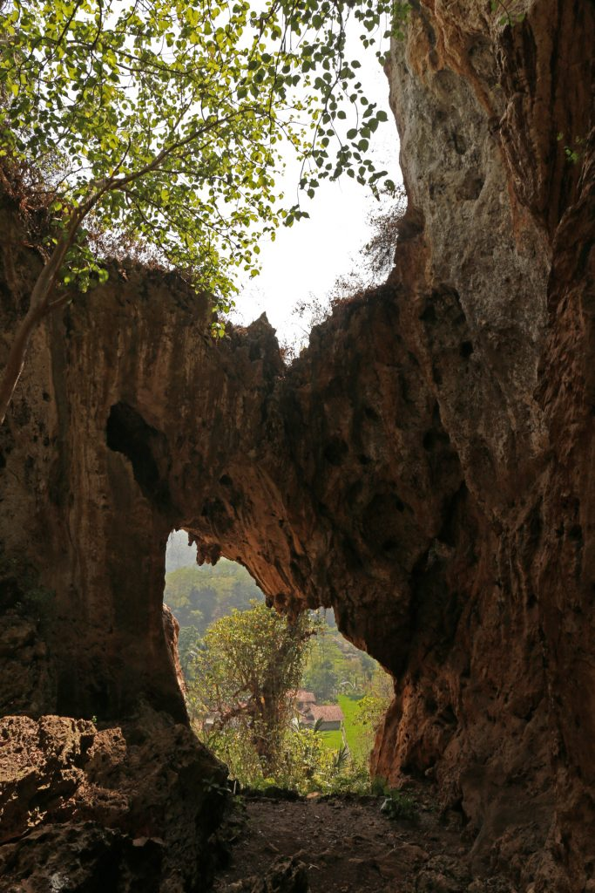
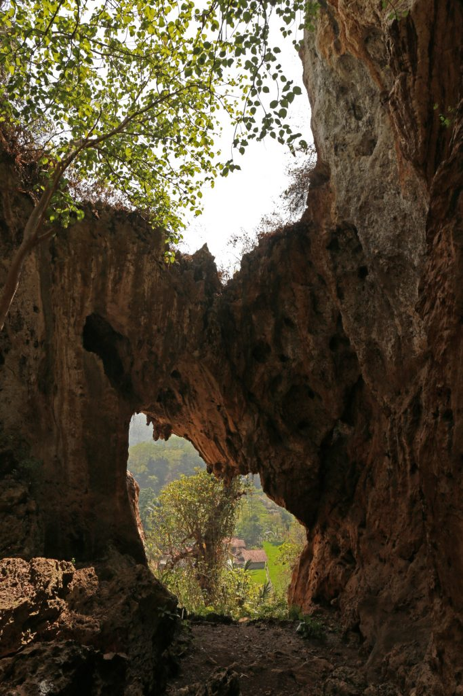

One of the tourists’ reasons to visit Stone Garden Geopark is indeed to feel its unique nuance, which is similar to a cartoon called the Flintstones. These people would take memorable pictures in front of such majestic natural landmark. The shapes of the stones vary and they look quite artistic. No wonder, most visitors won’t miss the chance to conduct photography during the visit. As an alternative, they are allowed to explore the site and climb the hill with the help of a local guide.
The next allure of Stone Garden Geopark is its history. According to experts, this place was once a seabed mountain! Not to mention it is said the age is more than 27 million years! There are significant proofs scattered on the site, including the fossils of coral animals and hollow rocks (representing the shape of coral). Through the years, these corals harden and turn into limestone rocks that tourists can see on the site now. For further history regarding the site, make sure to ask either the locals or tour guide.
 
